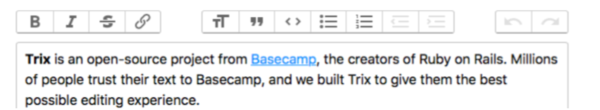

./grailsw create-domain-class Announcement
| Created grails-app/domain/demo/Announcement.groovy
| Created src/test/groovy/demo/AnnouncementSpec.groovCreate and test a Grails 3 TagLib; integrate the Trix WYSWYG editor
Learn how to integrate Trix (the rich text editor created by Basecamp) with your Grails app with the help of a custom TagLib
Authors: Sergio del Amo
Grails Version: 3.2.9
1 Getting Started
In this guide you are going to integrate a third party WYSWYG editor into your Grails 3 application with the help of a TagLib.
1.1 What you will need
To complete this guide, you will need the following:
-
Some time on your hands
-
A decent text editor or IDE
-
JDK 1.7 or greater installed with
JAVA_HOMEconfigured appropriately
1.2 How to complete the guide
To complete this guide, you will need to checkout the source from Github and work through the steps presented by the guide.
To get started do the following:
-
Download and unzip the source or if you already have Git:
git clone https://github.com/grails-guides/grails-taglib-wyswyg-trix.git -
cdintograils-guides/grails-taglib-wyswyg-trix/initial -
Head on over to the next section
You can go right to the completed example if you cd into grails-guides/grails-taglib-wyswyg-trix/complete
|
2 Writing the Application
2.1 Domain Class
Create a persistent entity to store Announcement entities. Most common way to handle persistence in Grails is the use of Grails Domain Classes:
A domain class fulfills the M in the Model View Controller (MVC) pattern and represents a persistent entity that is mapped onto an underlying database table. In Grails a domain is a class that lives in the grails-app/domain directory.
/grails-app/domain/demo/Announcement.groovy
package demo
class Announcement {
String title
String message
static constraints = {
title maxSize: 255
}
static mapping = {
message type: 'text'
}
}2.2 Scaffolding
Generate static scaffolding (Controller and Views) for the Domain class you created in the previous section.
./grailsw generate-all Announcement
| Created grails-app/domain/demo/Announcement.groovy
| Created src/test/groovy/demo/AnnouncementSpec.groov| Learn more about scaffolding in the Grails documentation. |
2.3 Downloading Trix
Trix Editor is an open-source rich text editor project developed by Basecamp.
Compose beautifully formatted text in your web application. Trix is an editor for writing messages, comments, articles, and lists—the simple documents most web apps are made of. It features a sophisticated document model, support for embedded attachments, and outputs terse and consistent HTML.

To integrate into a Grails application:
-
Download the latest stable release. For this guide, we use version 0.10.0
-
Copy trix.js to assets/javascripts/trix.js
-
Copy trix.css to assets/javascripts/trix.css
-
Reference js and css files with Asset Pipeline Plugin
The Asset-Pipeline is a plugin used for managing and processing static assets in JVM applications primarily via Gradle (however not mandatory). Asset-Pipeline functions include processing and minification of both CSS and JavaScript files
Include the js file with Asset pipeline:
/grails-app/assets/javascripts/application.js
//= require trixInclude the css file with Asset pipeline:
/grails-app/assets/stylesheets/application.css
*= require trix2.4 Writing the Taglib
A tag library fulfills role of "view helper" in the Model View Controller (MVC) pattern and helps with GSP rendering. In Grails a tag library is a class with a name that ends in the convention "TagLib" and lives in the grails-app/taglib directory. Use the create-tag-lib command create a tag library _
./grailsw create-taglib TrixThe TagLib integrates Trix with forms as described in their documentation:
/grails-app/taglib/demo/TrixTagLib.groovypackage demo class TrixTagLib { static namespace = 'trix' (1) static defaultEncodeAs = [taglib: 'text'] (2) def editor = { attrs, body -> def id = attrs.id ?: attrs.name out << "<input id=\"${id}\" type=\"hidden\" name=\"${attrs.name}\"" if ( attrs.value ) { out << " value=\"${attrs.value.encodeAsHTML()}\"" (2) } out << ' />' out << "<trix-editor input=\"${id}\"></trix-editor>" } }
1 We use a custom name space; trix 2 By default we encode as Text but the value, if present, is encoded as Html And we test the TagLib:
/src/test/groovy/demo/TrixTagLibSpec.groovypackage demo import grails.test.mixin.TestFor import spock.lang.Specification /** * See the API for {@link grails.test.mixin.web.GroovyPageUnitTestMixin} for usage instructions */ @SuppressWarnings(['LineLength', 'MethodName']) @TestFor(TrixTagLib) class TrixTagLibSpec extends Specification { void 'test trix editor markup is created'() { when: def expected = '''<input id="x" type="hidden" name="content" value="Editor content goes here" /><trix-editor input="x"></trix-editor>''' def output = applyTemplate('<trix:editor name="content" id="x" value="Editor content goes here"/>') (1) then: output == expected } void 'trix editor value and id parameters are optional'() { given: def expected = '<input id="messsage" type="hidden" name="messsage" /><trix-editor input="messsage"></trix-editor>' expect: tagLib.editor(name: 'messsage') == expected (2) } }
1 applyTemplategets as an argument anything that would be valid in a GSP. That code gets evaluated as if it were in a GSP and what’s get returned is the result of evaluating that.2 Because this test is annotated with @TestFor(TrixTagLib)the compiler will add a property calledtagLib. You can interact with thattagLibproperty and invokeeditortag as it were a method. You could pass a map which will be passed to theargsor a closure as the last method parameter which will be used as thebodyof the tag.
2.5 Use the Taglib
Use Trix in create and edit GSPs. Those were generated with the static scaffolding generate-all command.
Replace:
<f:all bean="announcement"/>with:
/grails-app/views/announcement/create.gsp
<f:all bean="announcement" except="message"/>
<div class="fieldcontain required">
<label for="message">
<g:message code="announcement.message" default="Message"/>
<span class="required-indicator">*</span>
</label>
<trix:editor name="message" value="${announcement.message}"/>
</div>/grails-app/views/announcement/edit.gsp
<f:all bean="announcement" except="message"/>
<div class="fieldcontain required">
<label for="message">
<g:message code="announcement.message" default="Message"/>
<span class="required-indicator">*</span>
</label>
<trix:editor name="message" value="${announcement.message}"/>
</div>3 Running the Application
To run the application use the ./gradlew bootRun command which will start the application on port 8080.
To run the tests:
./grailsw
grails> test-app
grails> open test-report4 Do you need help with Grails?
OCI sponsored the creation of this Guide. OCI offers several Grails services:

OCI Grails Team includes Grails co-founder and the core development team. Gain access to the engineers who developed, matured and maintain Grails